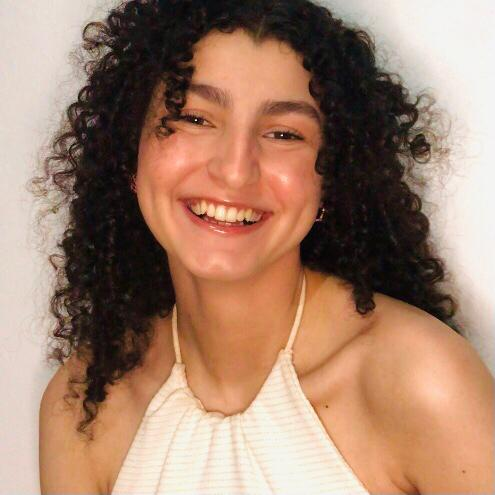

Bem vindo ao FisioMov
1500+
50+
100+
Faça parte desse movimento,
o seu parceiro virtual.
Nossa plataforma revolucionária permite que você aprimore e otimize o seu tratamento de fisioterapia com a ajuda da mais avançada inteligência artificial.
Aqui, a cura está ao alcance de um clique. Com a nossa IA inovadora, você terá à disposição uma avaliação precisa da sua posição e movimentos, permitindo uma fisioterapia personalizada e eficiente. Não importa onde você esteja, fisioMov estará ao seu lado, oferecendo orientações e exercícios direcionados para acelerar sua recuperação.
Comece a sua jornada com fisioMov hoje e descubra como a tecnologia pode fazer a diferença em seu processo de recuperação. Sua saúde, em suas mãos, com o poder da IA ao seu lado.


Recursos Terapeuticos

Fototerapia
Recorre-se à luz para realizar o tratamento, como por exemplo, os infravermelhos e o laser.
/i.s3.glbimg.com/v1/AUTH_59edd422c0c84a879bd37670ae4f538a/internal_photos/bs/2020/7/p/b4LZ09QdWvZr1aon6NjQ/imagem.jpg)
Terapia manual
Aplicação de técnicas como manipulações articulares, mobilização, alongamentos e terapia miofascial, entre outras.

Hidroterapia
Realizada dentro d'água, seja em piscinas ou tanques, utilizando equipamentos aquáticos, como turbilhões, hidromassagens, etc.
:format(webpp))
Cinesioterapia
Alongamentos, mobilizações e fortalecimento muscular. Tem como base o próprio movimento corporal.

Electroterapia
Utiliza um aparelho de eletroterapia com corrente elétrica. Proporciona a redução da dor, regeneração dos tecidos e outro benefícios
Massoterapia
Técnicas de massagem, incluindo as de relaxamento, terapêuticas e drenagem linfática manual.

Crioterapia
Uso do frio para tratamento local ou geral do corpo. Pode-se aplicar o gelo, bolsas de gel ou compressas frias.

Mecanoterapia
Esta terapia utiliza agentes mecânicos, como por exemplo o ultra-som.

Cinesioterapia Respiratória
Quando o tratamento é voltado para a recuperação e reabilitação de condições que afetam o sistema respiratório.

Termoterapia
Realizado por meio do uso de calor, que pode incluir calor úmido, bolsas de água quente, parafina, parafango e ondas curtas, entre outras opções.
Corpo Técnico
Desenvolvido por especialistas em fisioterapia e tecnologia, nosso compromisso é proporcionar a você uma experiência única de recuperação.
-

Adrieli Salvador
Estudante de Fisioterapia
Universidade Uni LaSalle
-
Barbara Dias
Estudante de Fisioterapia
Universidade Uni LaSalle
-
Yasmim Braga
Estudante de Fisioterapia
Universidade Uni LaSalle